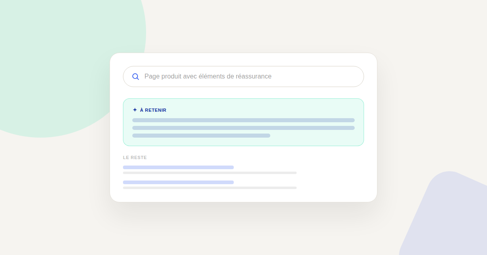
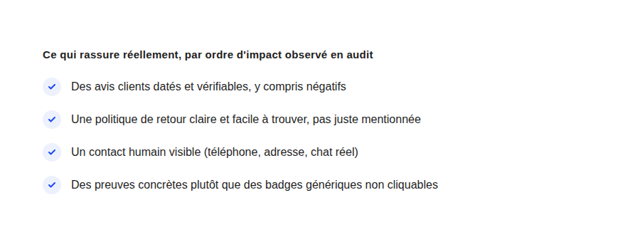

Trust signals : ce qui rassure vraiment un visiteur avant l'achat
Un badge « paiement 100% sécurisé » générique, collé en bas de page sans réflexion, ne rassure plus personne — la surenchère de badges a fini par les rendre invisibles. Ce qui rassure vraiment un visiteur est plus précis, et souvent plus simple.

La réassurance client est l'un des leviers CRO les plus mal exploités : soit absente, soit surchargée de badges décoratifs qui ne rassurent plus personne à force d'être identiques sur tous les sites, fiables ou non. La question à se poser n'est pas « combien de badges afficher » mais « qu'est-ce qui réduit vraiment l'anxiété d'un visiteur à ce moment précis de son parcours ».
Pourquoi les badges génériques ont perdu leur effet
Un badge « paiement sécurisé » non cliquable, identique sur des milliers de sites, n'apporte plus d'information vérifiable au visiteur : il est devenu un élément de décor que l'œil ignore, un peu comme la bannière publicitaire que personne ne regarde plus consciemment. Ce n'est pas que la sécurité du paiement n'a pas d'importance — c'est que ce badge précis ne prouve plus rien à un visiteur méfiant.
Ce qui rassure vraiment, par ordre d'impact
Les avis clients datés, y compris négatifs
Un avis daté et attribué à un vrai profil est plus crédible qu'une note globale sans détail. Contre-intuitivement, afficher aussi quelques avis négatifs (avec la réponse de la marque) renforce la crédibilité de l'ensemble : un site avec uniquement des avis 5 étoiles déclenche plus de méfiance qu'un site avec une majorité d'avis positifs et quelques critiques traitées avec sérieux.
Une politique de retour claire et facile à trouver
Le frein d'achat le plus fréquent en e-commerce n'est pas le prix, c'est l'incertitude sur ce qui se passe si le produit ne convient pas. Une politique de retour affichée clairement, en langage simple, directement sur la page produit — pas enfouie dans les CGV — réduit cette incertitude de façon mesurable.
Un contact humain visible
Un numéro de téléphone, une adresse physique ou un chat réellement tenu par une personne rassurent davantage qu'un simple formulaire de contact générique, en particulier pour un premier achat sur un site inconnu ou pour un panier d'un montant élevé.

Adapter la réassurance au moment du parcours
Le type de réassurance efficace change selon l'étape : sur une page produit, ce sont les avis et le détail du produit qui comptent le plus ; au moment du paiement, c'est la clarté sur la sécurité et les frais additionnels ; après l'achat, c'est la confirmation claire et le suivi de commande. Répéter le même élément de réassurance à chaque étape est moins efficace que d'adapter le message au doute réel de ce moment précis.
Le test le plus simple à mener
Avant d'ajouter un nouvel élément de réassurance, posez-vous la question inverse : si vous le retiriez, un visiteur méfiant remarquerait-il son absence ? Si la réponse est non, l'élément ne rassure probablement déjà plus personne — mieux vaut le remplacer par quelque chose de vérifiable que d'en ajouter un de plus au même endroit.
FAQ
Faut-il vraiment afficher des avis négatifs sur son site ?
Oui, dans une mesure raisonnable : quelques avis négatifs traités avec sérieux renforcent la crédibilité de l'ensemble, tant que la note globale reste bonne et que les réponses de la marque sont constructives.
Les badges de paiement sécurisé sont-ils inutiles ?
Ils gardent une utilité technique réelle (certifier le prestataire de paiement), mais leur effet de réassurance visuelle s'est fortement émoussé à force d'être génériques et omniprésents — ce n'est plus le levier de réassurance le plus efficace.
Comment mesurer l'impact d'un changement de réassurance ?
Un test A/B sur la page concernée reste la méthode la plus fiable : comparer le taux de conversion avec et sans l'élément testé, sur un volume de trafic suffisant pour être significatif.
Envie d'un audit de la réassurance sur votre tunnel d'achat ?
Pour aller plus loin, voir la page CRO, et les articles Landing page et Popups et exit-intent.
Pour continuer sur ce sujet.